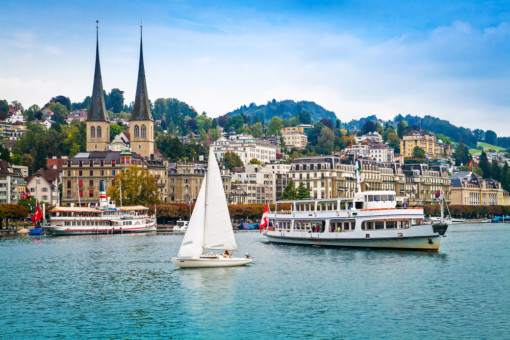
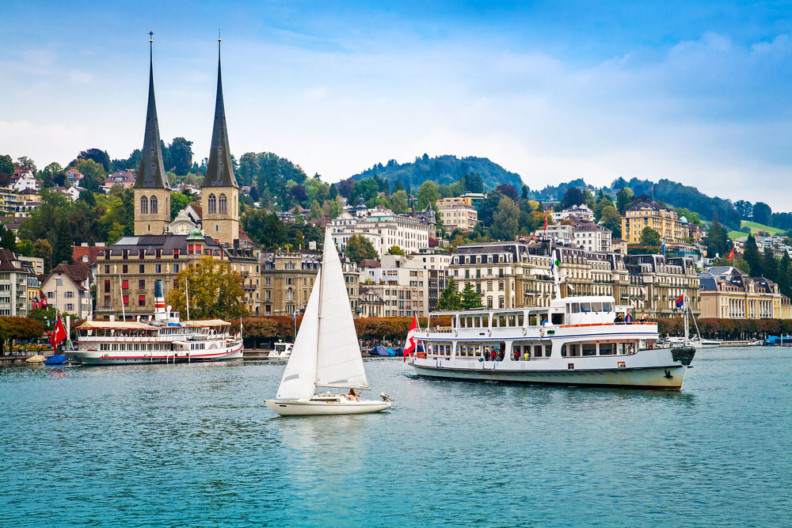

Elveția
Elveția, numită și țara cantoanelor, este țara din Europa brăzdată de munți în cea mai mare proporție.Fiind și singura țară de pe continent cu 4 limbi oficiale(germana, franceza, italiana și retoromana), este renumită pentru stațiunile de ski care alcătuiesc un adevărat paradis al sporturilor de iarnă, orașele medievale care oferă un aspect unic aproape identic cu cel de acum 500 de ani, și zecile de lacuri glaciare de un albastru fascinant.Dintre toate acestea veți putea regăsi câteva mai jos.
1.Lucerna
 

Lucerna este un oras în Elvetia centrala, cu o populatie de 60.274 locuitori (31 decembrie 2003), capitala a cantonului Lucerna. Orasul este situat pe malul lacului Lucerna (Vierwaldstättersee).
Nu exista o atestare documentara a fondarii orasului, dar acesta este mentionat in 840 sub numele de "Luciaria", nume ce provine de la o manastire a Sfantului Leodegar, fondata in jurul anului 730. Deschiderea drumului prin trecatoarea Sfantul Gotthard in secolul XIII a facut din Lucerna un important centru de schimb. Cucerit de habsburgi in 1291, s-a alaturat Confederatiei Elvetiene in 1332. Lucerna fost capitala a Republicii Elvetiene in 1798.
Raul Reuss se varsa in lac, motiv pentru care in oras exista cateva poduri. Cel mai faimos este Podul Capelei (Kapellbrücke), un pod de lemn de 204 m lungime, construit in 1333, desi a trebuit sa fie inlocuit in 1993 dupa un incendiu. Podul trece pe langa Turnul cu Apa in forma de octogon (Wasserturm), o fortificatie din secolul XIII. Podul impreuna cu Turnul cu Apa reprezinta emblema orasului. Muzeul de Transport al Elvetiei este un muzeu impresionant de mare, cu exponate din toate domeniile transportului, incluzand locomotive, vagoane, automobile, nave si avioane.
Centrul de Cultura si Conventie din Lucerna, de pe malul lacului a fost construit de Jean Nouvel. Centrul reprezinta una dintre cele mai importante sali de concert din lume (acustica: Russel Johnson). In fiecare an, spre sfarsitul verii, are loc faimosul festival Lucerna de muzica clasica.
Lucerna este una din destinatiile cele mai vizitate din Elvetia. Orasul este recunoscut pentru peisajul urban atractiv si pentru Podul Chapel. Centrul istoric al orasului - foarte pitoresc, este reprezentat de zona pietonala, suficient de mica ca suprafata pentru a putea fi vizitata pe jos. Din Lucerne se pot efectua excursii cu vaporul cu aburi pe Lacul Lucerne sau se poate urca cu trenul pe unul din varfurile pre-alpine.
Pentru planuri de vacanță:


2.Zermatt

Zermatt este o municipalitate apartinand de districtul Visp, in cantonul elvetian Valais. Localitatea este asezata la capatul vaii Mattertal, la o altitudine de 1.620 metri, chiar la poalele celor mai inalte varfuri din Elvetia. Se intinde pe o distanta de 10 km, de la Pasul Theodul,la granita cu Italia. Zermatt este renumit pentru activitatile montane si pentru resorturile de ski ce se gasesc aici.
Localitatea era cunoscuta ca fiind una preocupata de agricultura dar zona s-a dezvoltat rapid imediat dupa interesul aratat de unii oameni pentru alpinism, conducand la aparitia multor facilitati turistice. Satul a fost descoperit de cativa alpinisti printre care mai notabil Edward Whymper, care au cucerit muntele Matterhorn, astfel facand localitatea foarte cunoscuta. Muntele Matterhorn era unul dintre putinele obiective ramase necucerite pana in 1865 iar expeditia alpinistilor s-a incheiat dramatic cu doar 3 dintre cei 7 cataratori plecati la inceput.
Zermatt este punctul de plecare pentru cateva trasee montane cunoscute printre care si unul ce se sfarseste in Chamonix, Franta. Tot prin zona trece si o spectaculoasa cale ferata cunoscuta sub numele de Gornergratbahn si este calea ferata aflata la cea mai mare altitudine din Europa, 3089 metri. Zona de ski aflata la mare altitudine, se imparte in 4 sectoare: Sunnegga, Gornergrat, Klein Matterhorn si Schwarzsee.
Pentru planuri de vacanță:
3.Saint Moritz
St Moritz este un oras statiune situat in valea Engadine in Elvetia. Acesta este un oras principal in districtul Maloja, din cantonul elvetian Graubünden. Cel mai inalt varf din Alpii de Est, Bernina Piz, se afla la cativa kilometri sud de oras. Localitatea, inconjurat de un lac magnific, este situat la o altitudine de 1.800 m deasupra nivelului marii. Faima statiunii tine si de faptul ca, in 1928 si in 1948, orasul a gazduit Jocurile Olimpice de Iarna.
Inca de la inceputul anilor 1980, St Moritz este promovata si cunoscuta in lume ca o statiune de top. Este o baza pentru o serie de sporturi in aer liber, cei de aici pretinzand ca aceasta este cea mai veche statiune de iarna din lume si ca, la urma urmelor, aici au fost odata gazduite Jocurile Olimpice de Iarna. Si alte premiere au aparut aici: in 1880, aici a avut loc primul turneu de popice pe gheata din Europa si in 1884 aici a fost construita prima pista pentru saniile lungi si inguste. In ceea ce priveste saniile, participantii indrazneti se aventurau pe pista, ajungand pana la o viteza de 140 km/h. Este si locul de "nastere" al bobului, in 1891. Aici veti putea vedea oameni bogati coborand din masini Rolls-Royce si membri ai aristocratiei europene aflati in vacanta. Aici exista tot timpul ceva care sa va uimeasca - femeile frumoase invelite in haine de blana si transportate de o sanie trasa de caini de marimea unor vitei sunt realitate, nu fantezie.
Nimeni nu poate evita forfota din St Moritz si nimeni nu poate evita toate activitatile frenetice. De aceea, trebuie sa existe in statiune un loc unde sa va puteti retrage. Din fericire, zona superioara a vaii Engadine este la fel ca altele in ceea ce priveste locurile frecventate de cei bogati si distinsi: trebuie doar sa faceti cativa pasi din drumul principal si zgomotul masinilor Ferrari va disparea la fel ca mirosul parfumurilor si al lotiunilor dupa ras.
Cu peisajele sale uluitoare, cu ierni abundente si numeroase activitati de vara, cu generoasa ospitalitate elvetiana, orasul este o destinatie de vacanta perfecta pentru iubitorii de frumos si impatimitii de aventura.
Pentru planuri de vacanță: